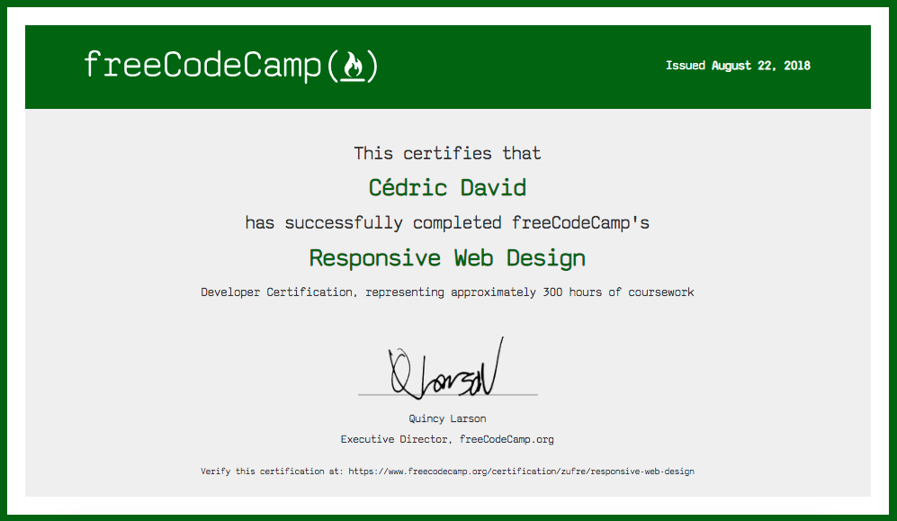
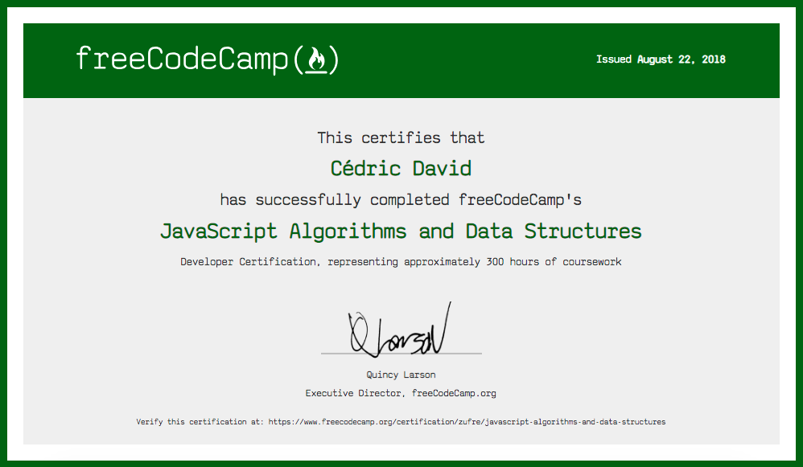
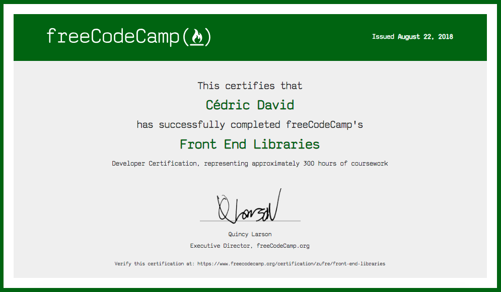

About Me
Let me tell you a few things...
BIO
After a successful career as a classical musician and having been
interested in programming all my life, I started to learn coding
professionally in 2017. I have a robust understanding of HTML 5, CSS
3, Javascript, Bootstrap 4, JQuery, React, APIs and a working
knowledge of Node, Express, Ruby, Sinatra, Rails and SQL. I am a
Microsoft Certified Professional in HTML5 CSS3 and Javascript
Programming and very passionate to expand my knowledge in the
front-end and back-end of web development. I believe I am a good
team player, hard worker and quick learner.
Please check out
my Resume.


